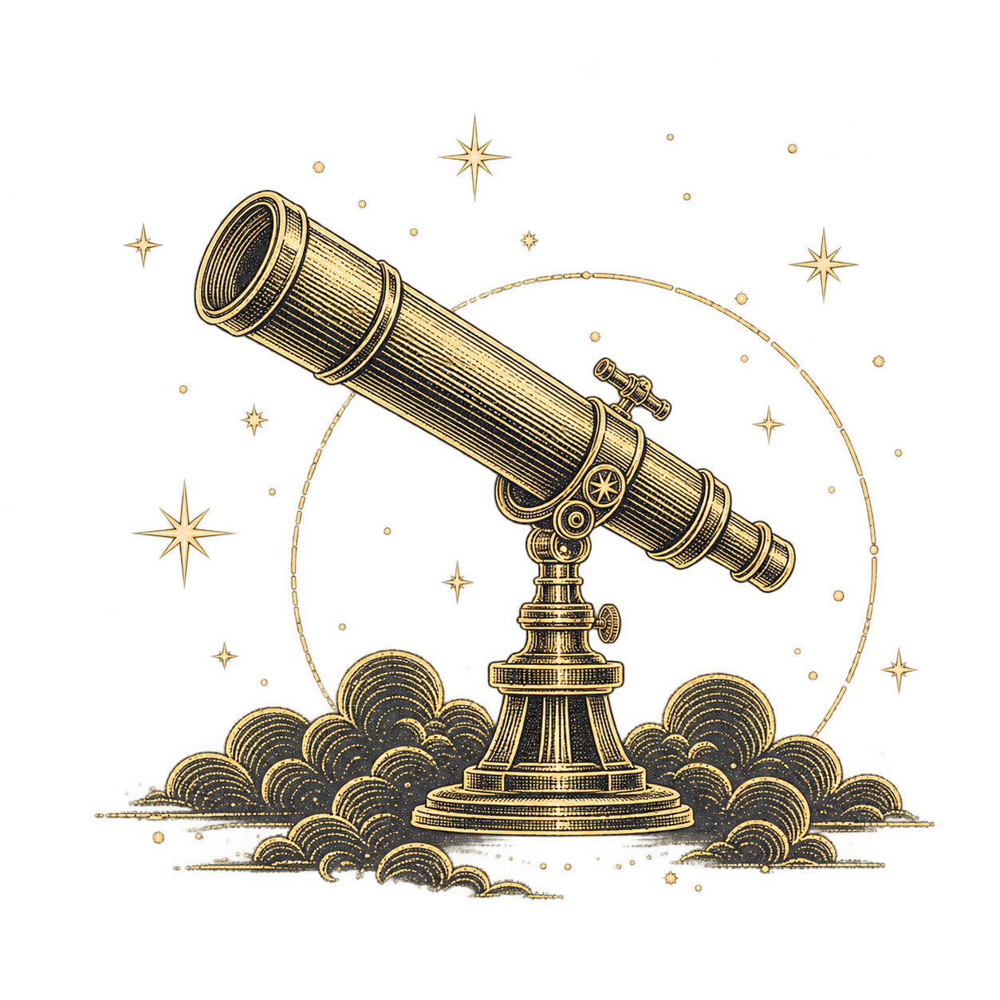
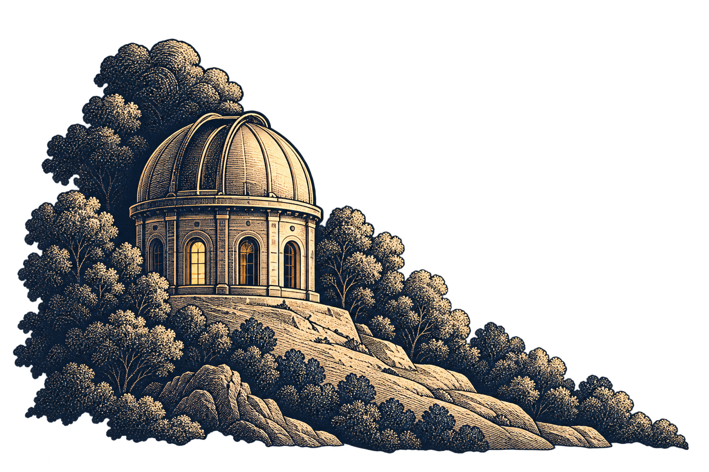
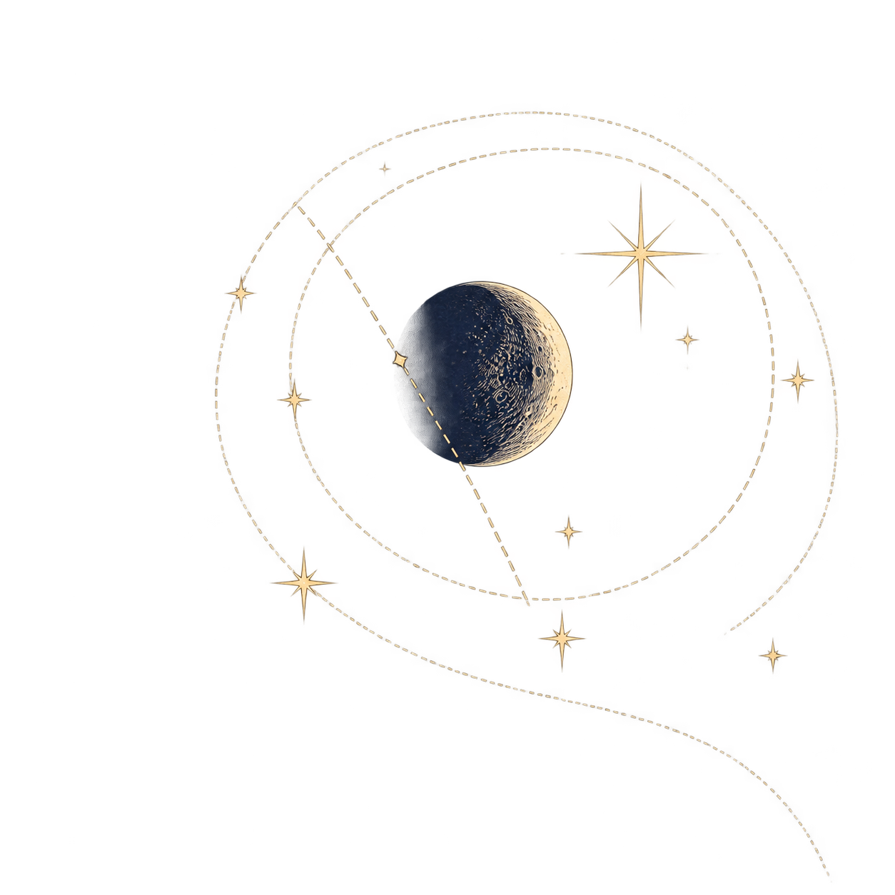
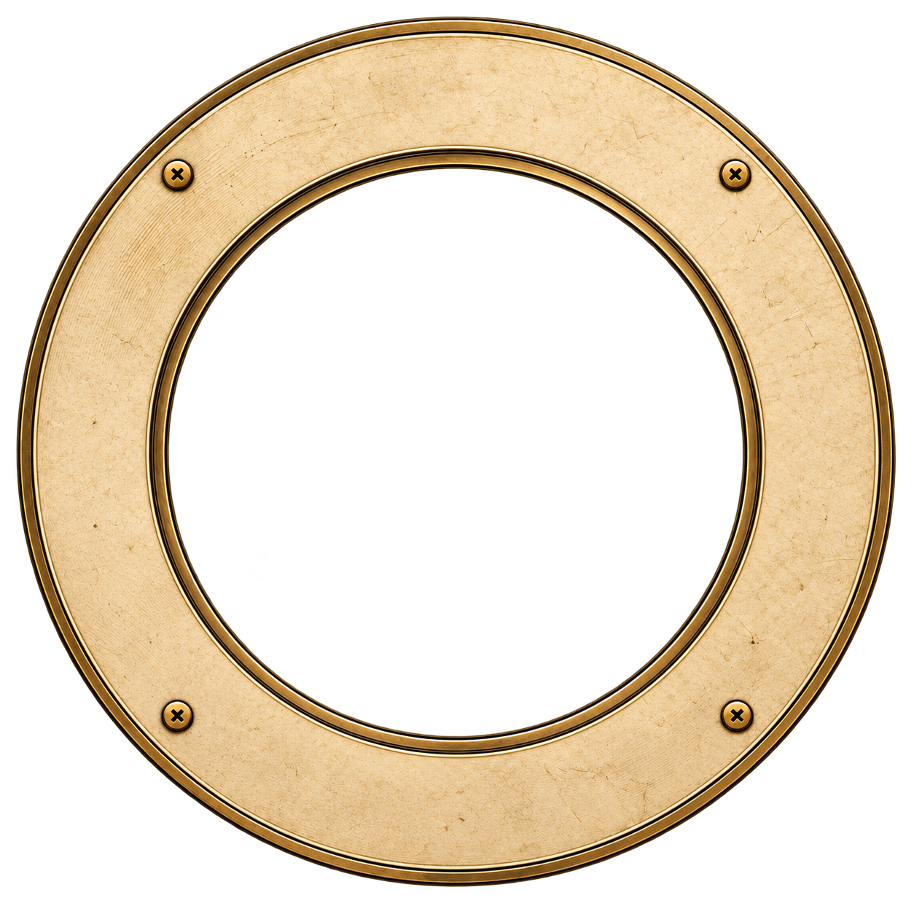
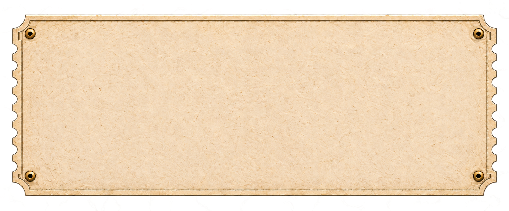
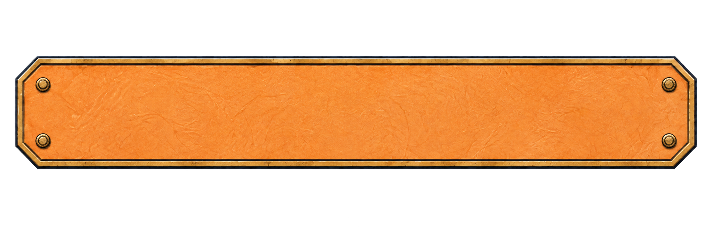
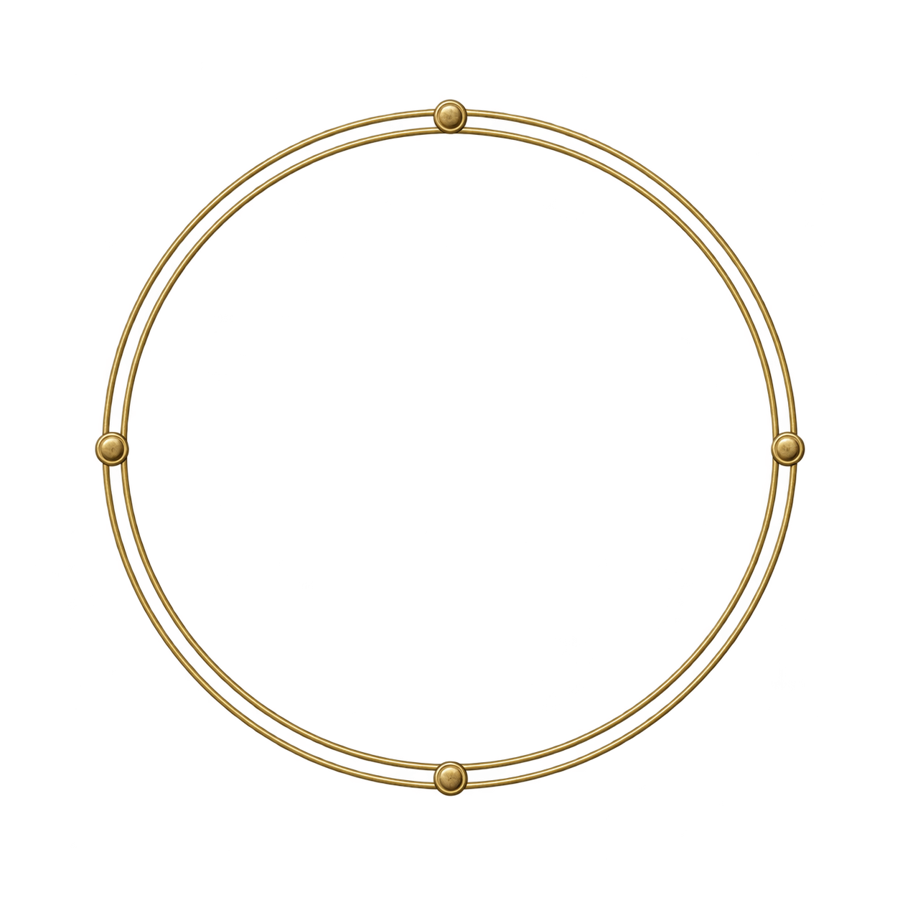

Meridian · Observatory artwork kit
Eight separate decorative assets · 22 SVG icons · two licensed fonts · source and integration notes
Full gallery and specifications →







Reference-based reconstructions. Text, amounts, dates, pointers and controls stay live. Application integration remains with the build team.